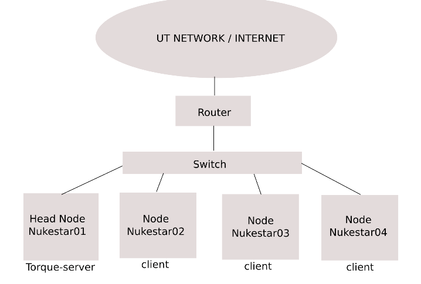

Introduction¶
This document covers the basics of hardware setup, software installation, and maintenance procedures for the Nukestar compute cluster at The University of Texas at Austin.
In the fall of 2014, the Nuclear and Radiological Engineering (NRE) department came to posses a small fraction of the recently decommissioned Ranger supercomputer. It was apparent that this new resource would need to be managed differently than the current cluster available to NRE students. Briefly, the old (2009-2014) Nukestar cluster consists of 6 machines totaling 214 cores. These machines are essentially carbon copies of each other, with every node on the cluster having the same software installed. This configuration does not scale. It is difficult to ensure all nodes always stay in perfect sync with regaurds to permissions and software packages. In addition, there were many points of failure: each machine had a change of going down due to a bad hard drive.
In the new stateless compute node cluster management paradime, the compute nodes must retrieve their OS image via PXE from a remote source to function. These nodes will also need access to a network storage pool. The key benifit from this stateless comptue node arangement is that, to the user, the entire cluster looks like one machine: Software only needs to be installed once, group, user, and permission changes are automatically propogated to all machines in the cluster.
A traditional single node Netword File System (NFS) share is not likely to handle the simultaneous demand of 48 different compute nodes. A distributed storage solution must be employed. This is provided by the GlusterFS file system. GlusterFS allows multiple physical machines to pool their storage, cpu, and network capacity together to work as one storage unit. The GlusterFS file system may be exported as a traditional NFS share. Read requests are distributed evenly amongst the physical storage nodes allowing good performance even when many of the compute nodes are requesting information from the storage pool simultaneously.
Update fall 2015: Alas, the 48 Sunblades were never powered on due to power upgrade, cost, and maintenence concerns. Therefore, the cluster contains far fewer compute nodes than the ideal situation. The above still holds some truth, however, now that only 6-10 machines will comprise the cluster a traditional NFS file share is able to handle the load emposed on it by relatively few compute nodes. This effectively eliminates provisioning seperate storage nodes to run GlusterFS. Only a NFS share needs to be setup on the head node for adequeate FS performance. In case a GlusterFS setup is desired at some point in the future, Appendinx A provides some basic pointers on setting up the storage pool. Diskless compute nodes will still utilize PXE booting.
The physical layout of the Nukestar cluster is shown below. The Router doubles as a firewall. Only 3 compute nodes are shown, however, many more may exist (5 as of fall 2015). Another benifit of the stateless compute node setup is that a new compute node can be added to the cluster by connecting it to the switch, assigning it a static IP, enabling PXE boot up in the bios, and powering it on. Done.
{kind=link}
The documentation will cover:
- Firewall/router setup
- Admin Software
- Storage node setup
- Head node setup
- PXE and NFS
- Torque+maui Configuration
- Environment Modules
- Building software examples
- Running jobs
The future maintainers of Nukestar should always keep security as their top priority when setting up or modifying the cluster. Export controlled software will exist on the cluster. The admin should read up on the following topics:
- PfSense
- openSSH
- groups/permissions